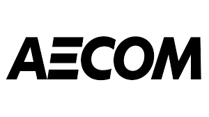
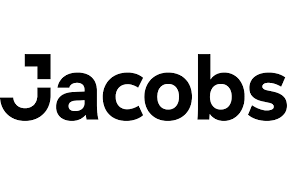

Europe's Most Reliable BIM Clash Detection Services for Infrastructure
Europe is in the middle of a new infrastructure boom. With towns and cities upgrading railways, building new highways, and extending metro networks, the demand for safer, more efficient, and sustainable construction has never been higher. Digital construction is now at the heart of this transformation. At the core, Building Information Modelling BIM for short, is helping project teams design, build, and operate assets more intelligently than ever before.
But as infrastructure projects become more complex and high-stakes, reliability and accuracy are essential. That’s where BIM clash detection comes into play. By identifying design conflicts before construction begins, clash detection helps ensure projects move smoothly, safely, and without avoidable surprises. For both public and private sector work across Europe, picking a reliable BIM clash detection partner can make the crucial difference between a project that runs on rails and one that faces disruption.
BIM Clash Detection in European Infrastructure
In simple terms, BIM clash detection is the digital process of identifying unwanted overlaps or conflicts between different building elements in a 3D model, such as ensuring that an electrical cable tray doesn’t pass through a water pipe, or that a structural beam doesn’t block a ventilation shaft. This process usually happens in the design phase, saving time and money by fixing issues before ground is broken.
Types of Clashes
- Hard Clashes: Physical collisions between two objects, like pipelines and beams, occupying the same space.
- Soft Clashes: Issues with clearances or buffer zones, like inadequate space for maintenance access.
- Sequencing Clashes: Problems with the order of installation, such as scheduling two teams to work in the same area at once.
Typical European Project Challenges
- Legacy Networks: Integrating new infrastructure with old, sometimes undocumented, networks.
- Diverse Regulations: Navigating different regulations and standards across various countries.
- Complex Stakeholders: Coordinating between governments, utilities, private companies, and the public.
Compliance Context
Europe’s focus on digital standards is strong. The ISO 19650 series is now the backbone of BIM processes for many projects, and government mandates like the UK’s requirement for BIM Level 2 on public works are pushing adoption across the continent.
Criteria for Choosing a Reliable BIM Clash Detection Partner in Europe
Selecting the exemplary clash detection service is about much more than owning software. Here’s what to look for:
- Rich European Infrastructure Experience: Proven success in delivering clash detection on transport, water, energy, or utility projects across Europe.
- Advanced BIM Tools: Mastery of software like Revit, Navisworks, Tekla, and the capacity to develop custom scripts and automations.
- Coordination in Complex Environments: Demonstrated ability to handle multiple firms, languages, and regulatory environments.
- Communication & Customized Reporting: Clear reports tailored for client and project needs, with space for local compliance requirements.
- Transparency & Compliance: Evidence of meeting EU/national standards, and sharing data openly with partners and authorities.
Five Most Reliable BIM Clash Detection Companies in Europe
1. Arup

Who They Are:
Arup is renowned across Europe for tackling some of the region’s most significant and most challenging projects, bridges, tunnels, airports, you name it. They blend deep technical expertise with digital innovation, specializing in large-scale coordination for complex infrastructure.
Why They’re Trusted:
Arup’s BIM teams provide rigorous clash detection from design through to handover, always with an eye on local standards and environmental needs. Their legacy includes the high-speed rail lines in the UK and metro expansions in Northern Europe.
2. AECOM
Who They Are:
AECOM is a global infrastructure leader whose European operations stretch across the transport, water, energy, and urban sectors. Their digital services set the standard for robust project delivery.
Why They’re Trusted:
AECOM’s approach combines state-of-the-art BIM tools with a knack for stakeholder engagement. Their projects, like the Crossrail tunnels in London and the Polish transport upgrades, benefit from early, thorough clash detection that prevents costly delays.
3. WSP USA

Who They Are:
WSP’s global expertise is matched by a strong European presence, primarily through WSP UK and WSP Europe. They deliver multidisciplinary services on many of Europe’s compliance-intensive infrastructure projects.
Why They’re Trusted:
WSP’s clash detection process prioritizes collaboration across firms and languages. Their teams are familiar with the nuances of European digital construction standards and excel at managing complex, multi-year initiatives.
4. Tesla Outsourcing Services

Who They Are:
Tesla Outsourcing Services is an adaptable, collaborative partner for BIM clash detection and coordination. They work seamlessly with engineering consultants, designers, and contractors across the European market.
Why They’re Trusted:
Flexible and tech-savvy, Tesla delivers clear, actionable clash reports quickly, even across geographies and time zones. Their strength lies in remote collaboration and custom solutions for both large and mid-sized projects.
5. Jacobs Engineering Group
Who They Are:
Jacobs is a long-standing name in Europe’s most extensive infrastructure programs, from high-speed rail to complex metro systems. Their focus on risk management and regulatory compliance is unmatched.
Why They’re Trusted:
Jacobs’ digital and BIM teams are adept at integrating clash detection into broader workflows, making them specialists in de-risking mega-projects that need to meet strict EU and national standards.
Case Studies: BIM Clash Detection Success in European Infrastructure
Example 1: Cross-Border Rail Integration
A significant pan-European railway expansion faced hundreds of potential design conflicts between new tunnels and existing utilities. Thorough clash detection managed by a blend of partners like Arup and Jacobs helped resolve 95% of issues before construction, saving millions in potential rework.
Example 2: Major Urban Metro Extension
AECOM used BIM clash detection on a city’s metro extension, identifying and resolving 340 critical clashes between mechanical, structural, and system elements before tendering, shortening construction schedules and helping secure regulatory approval.
Example 3: Rural Utility Network Upgrade
Tesla Outsourcing Services worked remotely with regional engineers to coordinate a utility network upgrade. Their rapid, detailed clash reports enabled the project to align design, installation, and regulatory documentation, ensuring timely delivery and error-free handover.
How to Assess a BIM Clash Detection Service for European Infrastructure
When evaluating providers, here’s what decision-makers should ask:
Important Questions
- Has the provider delivered BIM clash detection on comparable European infrastructure projects?
- What BIM platforms and automation tools are they skilled in?
- Do they have the capacity to address language, regulation, and local standards issues?
- Can they show evidence reports, testimonials, and project outcomes of transparency and client satisfaction?
Assessment Checklist
- Proven project experience in Europe.
- Advanced and flexible BIM toolset (Navisworks, Revit, Tekla, etc.).
- Transparent, readable reports with actionable recommendations.
- Clear communication and willingness to tailor the process for local needs.
- Demonstrated compliance with ISO 19650 and other EU/national standards.
The Future of BIM Clash Detection for Europe’s Infrastructure
- Automation and AI: Emerging tools will spot and resolve conflicts faster, freeing teams for higher-value coordination.
- Data Standardisation: Cross-border infrastructure needs even tighter compliance, with the EU pushing for unified digital standards.
- Hybridization of Old and New: More infrastructure projects require merging existing assets with modern designs; advanced BIM bridges the gap.
- Ongoing Quality Assurance: Real-time digital inspection and model updates will support both build and operation phases, reducing hidden risks and long-term costs.
Conclusion and Next Steps
European infrastructure is undergoing a digital transformation that demands reliability and expertise. BIM clash detection makes complex builds smoother, safer, and more efficient by catching errors early and supporting better decision-making at every stage.
By choosing a proven partner, whether it’s Arup, AECOM, WSP USA, Tesla Outsourcing Services, or Jacobs Engineering Group, project teams can be confident that they’re positioned for success. Early engagement, rigorous evaluation, and clear communication remain the keys to maximizing BIM’s potential.
If you’re planning or managing a civil or public works project in Europe, now is the time to assess your BIM clash detection strategy. Reach out to these industry leaders, review their track records, and set your infrastructure project on the path to digital excellence and long-term value.